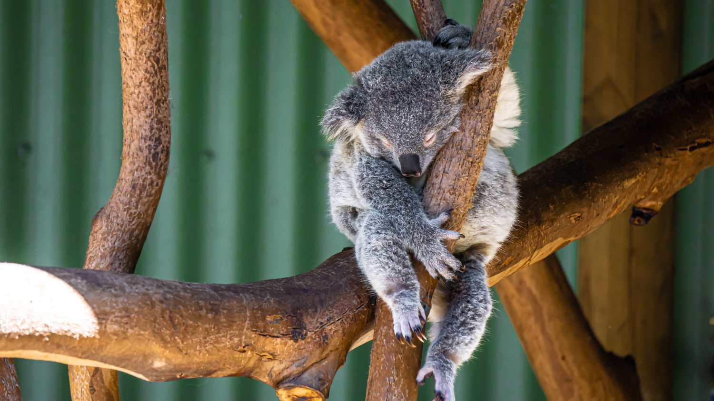

El koala (Phascolarctos cinereus) es una especie de marsupial diprotodonto de la familia Phascolarctidae, endémico de Australia.

Es el único representante existente de la familia Phascolarctidae y sus parientes vivos más cercanos son los wombats. Vive en las zonas costeras de las regiones este y sur australianas, en los estados de Queensland, Nueva Gales del Sur, Victoria y Australia Meridional. Es fácilmente reconocible por su cuerpo robusto sin cola, cabeza grande con orejas redondas y peludas y nariz grande en forma de cuchara. Mide entre 60 y 85 cm y pesan de 4 a 15 kg. El color de su pelaje va del gris plata al marrón chocolate. Las poblaciones septentrionales suelen ser de menor tamaño y de un color más claro que las del sur, por lo que se cree que puedan ser una subespecie separada, aunque esta posibilidad está en discusión.

Viven en zonas abiertas de bosques de eucaliptos, cuyas hojas constituyen la mayor parte de su dieta. Debido a que esta dieta aporta una cantidad escasa de nutrientes y calorías, los koalas llevan una vida sedentaria y suelen dormir hasta veinte horas al día.
